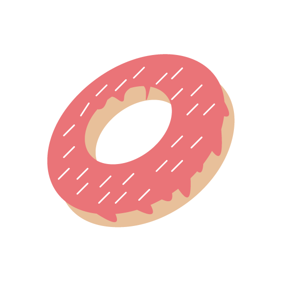

Butterfly
Ik eet graag donuts omdat ze zoet en zacht zijn. Meestal kies ik voor eentje met chocolade, maar soms neem ik er ook één met sprinkels. Als student kan ik zo’n traktatie echt niet missen op mijn dag.
Ik eet graag donuts omdat ze zoet en zacht zijn. Meestal kies ik voor eentje met chocolade, maar soms neem ik er ook één met sprinkels. Als student kan ik zo’n traktatie echt niet missen op mijn dag.